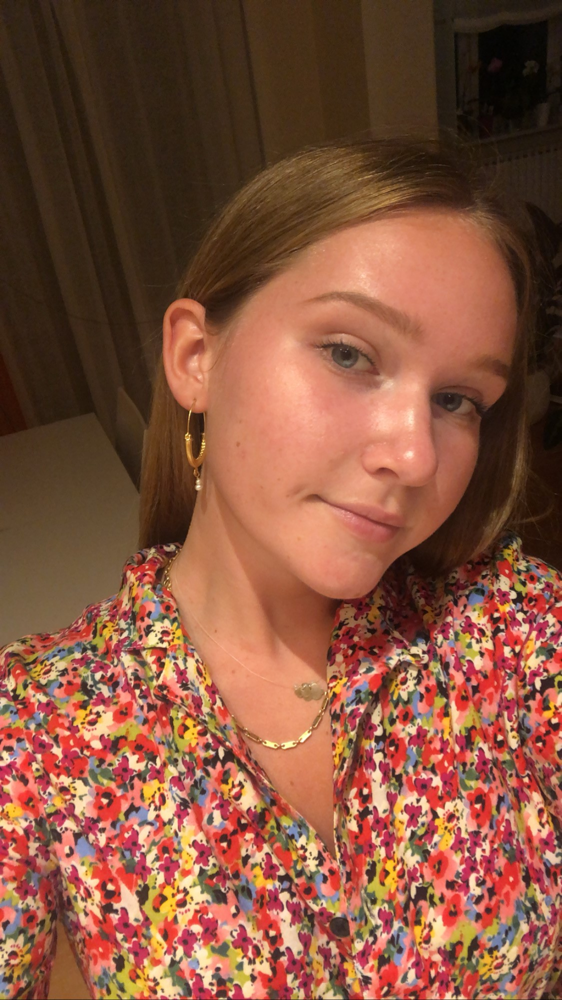

5 STVARI KOJE SVAKA CURA TREBA U ORMARU
Što obući ujutro je glavni problem koji zadaje glavobolju curama svako jutro.
Kažu, navečer si razmisli i složi outfit za iduće jutro, ali sve si nosila već 1000
puta i sve kombinacije su ti dosadile. U trenutcima neinspiranosti posegnte za
klasicima i začinte outfit fora naočalama ili crvenim ružem. Ovo su 5 stvari koje
su temelj svakog dobrog ormara.
Plave traperice
Znam, jako revolucionarno, rekla bi Miranda Priestley:

Par urednih plavih traperice (bez rupa!!!!), koje vam savršeno stoje, čine bazu za
vašu svakidašnju uniformu. Možete ih dress up-at, možete ih dress down-at i
uvijek ćete dobro izgledati.
Crna kožna jakna
Motorističke, elegantne, sa zakovicama, sa izvezenim detaljima ili
oversized/istrošene volimo ih, nosimo svake godine i nikad ne izlaze iz trenda.
Kožna jakna je must have za prijelazna razdoblja u godini, toplo ti je , a kad ju
obućete osijećate se kao jednako cool kao Olivia u zadnjim scenama Greasea.
Crni/bijeli/bež bodi
Obukli ste traperice, izabrali kožnjak dana i što ispod? Idete navečer na piće u
grad odaberite crni bodi, a za dnevne kombinacije birajte bijeli i bež. Važno je da
izaberete model i izrez koji najviše laska vašoj figuri, trenutačno su jako trendy
oni sa američkim izrezom, ali nećete fulati ni sa jednim drugim modelom jer su
klasik.
Bijele tenisice
Bih li bila basic white girl da nisam navela bijele tenisice. Odgovor je ne bih bila
girl uopće. Naše najbolje prijateljice bijele tenisice idu u 80% slučajeva na
APSOLUTNO sve! Obućete ljetni šos ili haljinu, ali želite da tvam bude ugodno
obucite bijele tenisice, traperice-bijele tenisice, kava u kvartu-bijele tenisice,
šetnja vikendom-bijele tenisice. Vidimo da sam opsjednuta bijelim tenisicama,
ali postoji li išta bolje od dobrog para bijelih tenisica? NE!
Razmišljala sam dugo što će biti moj peti must have komad, konkurencija je bila
velika, ali odluka je pala: Zlatne naušnice!
Zlatne naušnice
Savršeno povežu svaku kombinaciju, pogotovo se lijepo ističu ako imate zavezani
rep. Na odabir imate bezbroj različitih oblika, modela, čak i boje zlata mogu
varirati. Moja preporuka trendy komade kupite u H&M-u ili Zari, a the real thing
neka budu klasici. Trenutačni favorit, koje bih svima preporučila, su
tradicionalne hrvatske naušnice, nosite dio kulture, tradicije i običaja naše
predivne zemlje i uvijek je cool kombinirati nešto staro sa novime.

povratak na stranicu: MODA